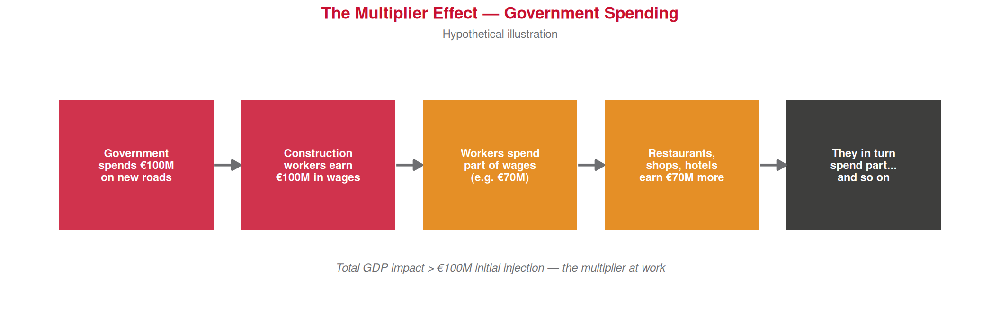

steps <- data.frame(
x = 1:5,
label = c(
"Government\nspends €100M\non new roads",
"Construction\nworkers earn\n€100M in wages",
"Workers spend\npart of wages\n(e.g. €70M)",
"Restaurants,\nshops, hotels\nearn €70M more",
"They in turn\nspend part...\nand so on"
),
col = c(ue_red, ue_red, "#E07B00", "#E07B00", ue_black)
)
ggplot(steps) +
geom_tile(aes(x = x, y = 1), width = 0.85, height = 0.7,
fill = steps$col, alpha = 0.85) +
geom_text(aes(x = x, y = 1, label = label),
color = "white", fontface = "bold", size = 3.1,
lineheight = 0.9) +
geom_segment(
data = data.frame(x = 1:4 + 0.43, xend = 1:4 + 0.57, y = 1, yend = 1),
aes(x = x, xend = xend, y = y, yend = yend),
arrow = arrow(length = unit(0.25, "cm"), type = "closed"),
color = ue_gray, linewidth = 1
) +
annotate("text", x = 3, y = 0.45,
label = "Total GDP impact > €100M initial injection — the multiplier at work",
color = ue_gray, size = 3.2, fontface = "italic") +
xlim(0.5, 5.5) + ylim(0.2, 1.6) +
theme_void() +
labs(title = "The Multiplier Effect — Government Spending",
subtitle = "Hypothetical illustration") +
theme(
plot.title = element_text(color = ue_red, face = "bold",
size = 13, hjust = 0.5),
plot.subtitle = element_text(color = ue_gray, size = 9, hjust = 0.5)
)